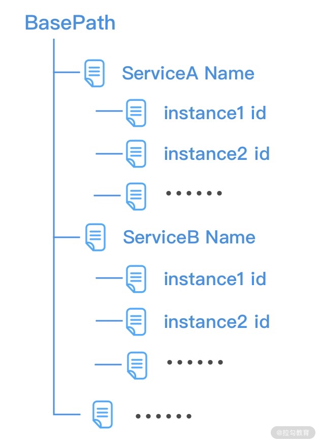
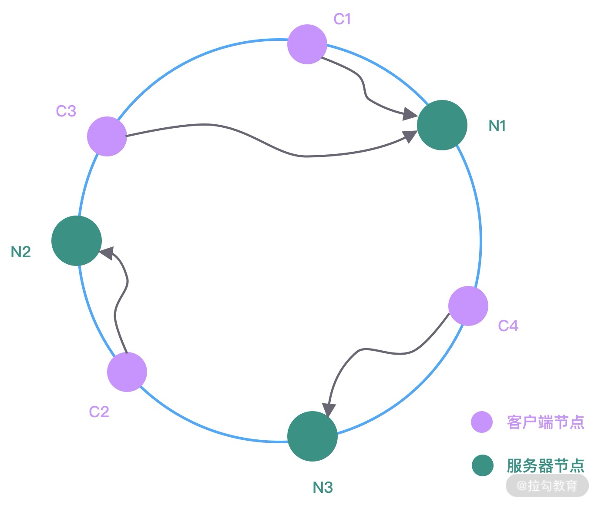
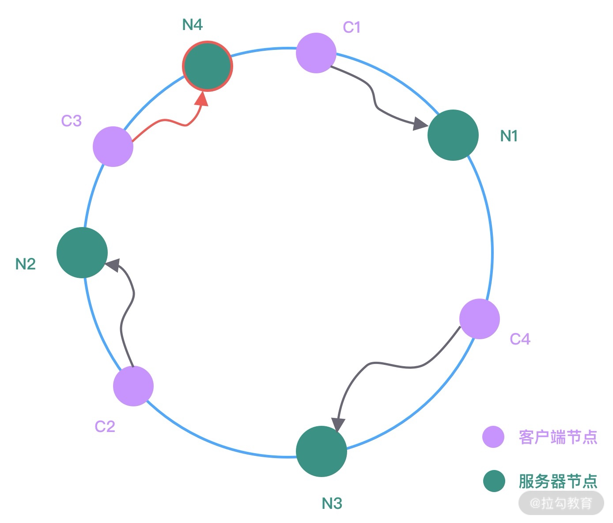
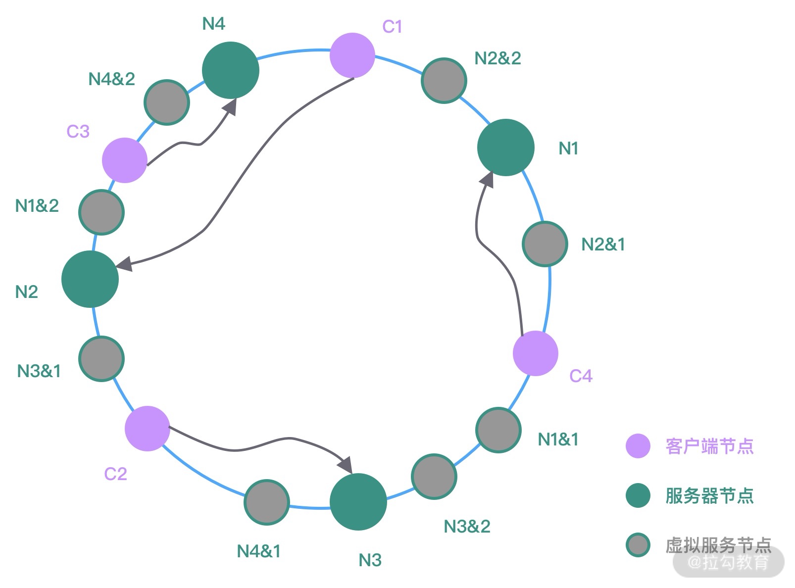

- 00 学好 Netty，是你修炼 Java 内功的必经之路.md.html
- 01 初识 Netty：为什么 Netty 这么流行？.md.html
- 02 纵览全局：把握 Netty 整体架构脉络.md.html
- 03 引导器作用：客户端和服务端启动都要做些什么？.md.html
- 04 事件调度层：为什么 EventLoop 是 Netty 的精髓？.md.html
- 05 服务编排层：Pipeline 如何协调各类 Handler ？.md.html
- 06 粘包拆包问题：如何获取一个完整的网络包？.md.html
- 07 接头暗语：如何利用 Netty 实现自定义协议通信？.md.html
- 08 开箱即用：Netty 支持哪些常用的解码器？.md.html
- 09 数据传输：writeAndFlush 处理流程剖析.md.html
- 10 双刃剑：合理管理 Netty 堆外内存.md.html
- 11 另起炉灶：Netty 数据传输载体 ByteBuf 详解.md.html
- 12 他山之石：高性能内存分配器 jemalloc 基本原理.md.html
- 13 举一反三：Netty 高性能内存管理设计（上）.md.html
- 14 举一反三：Netty 高性能内存管理设计（下）.md.html
- 15 轻量级对象回收站：Recycler 对象池技术解析.md.html
- 16 IO 加速：与众不同的 Netty 零拷贝技术.md.html
- 17 源码篇：从 Linux 出发深入剖析服务端启动流程.md.html
- 18 源码篇：解密 Netty Reactor 线程模型.md.html
- 19 源码篇：一个网络请求在 Netty 中的旅程.md.html
- 20 技巧篇：Netty 的 FastThreadLocal 究竟比 ThreadLocal 快在哪儿？.md.html
- 21 技巧篇：延迟任务处理神器之时间轮 HashedWheelTimer.md.html
- 22 技巧篇：高性能无锁队列 Mpsc Queue.md.html
- 23 架构设计：如何实现一个高性能分布式 RPC 框架.md.html
- 24 服务发布与订阅：搭建生产者和消费者的基础框架.md.html
- 25 远程通信：通信协议设计以及编解码的实现.md.html
- 26 服务治理：服务发现与负载均衡机制的实现.md.html
- 27 动态代理：为用户屏蔽 RPC 调用的底层细节.md.html
- 28 实战总结：RPC 实战总结与进阶延伸.md.html
- 29 编程思想：Netty 中应用了哪些设计模式？.md.html
- 30 实践总结：Netty 在项目开发中的一些最佳实践.md.html
- 31 结束语 技术成长之路：如何打造自己的技术体系.md.html
26 服务治理：服务发现与负载均衡机制的实现
在分布式系统中，服务消费者和服务提供者都存在多个节点，如果服务提供者出现部分机器节点负载过高，那么可能会导致该节点上接收的请求处理超时，从而导致服务提供者整体可用率下降。所以 RPC 框架需要实现合理的负载均衡算法，那么如何控制流量能够均匀地分摊到每个服务提供者呢？今天这节课我们便讨论 RPC 框架负载均衡机制的相关实现。
源码参考地址：mini-rpc
注册中心选型
服务消费者在发起 RPC 调用之前，需要知道服务提供者有哪些节点是可用的，而且服务提供者节点会存在上线和下线的情况。所以服务消费者需要感知服务提供者的节点列表的动态变化，在 RPC 框架中一般采用注册中心来实现服务的注册和发现。
目前主流的注册中心有 ZooKeeper、Eureka、Etcd、Consul、Nacos 等，选择一个高性能、高可用的注册中心对 RPC 框架至关重要。说到高可用自然离不开 CAP 理论，一致性 Consistency、可用性 Availability 和分区容忍性 Partition tolerance 是无法同时满足的，注册中心一般分为 CP 类型注册中心和 AP 类型注册中心。使用最为广泛的 Zookeeper 就是 CP 类型的注册中心，集群中会有一个节点作为 Leader，如果 Leader 节点挂了，会重新进行 Leader 选举，ZooKeeper 保证了所有节点的强一致性，但是在 Leader 选举的过程中是无法对外提供服务的，牺牲了部分可用性。Eureka 是典型的 AP 类型注册中心，在实现服务发现的场景下有很大的优势，整个集群是不存在 Leader、Flower 概念的，如果其中一个节点挂了，请求会立刻转移到其他节点上。可能会存在的问题是如果不同分区无法进行节点通信，那么可能会造成节点之间的数据是有差异的，所以 AP 类型的注册中心通过牺牲强一致性来保证高可用性 。
对于 RPC 框架而言，即使注册中心出现问题，也不应该影响服务的正常调用，所以 AP 类型的注册中心在该场景下相比于 CP 类型的注册中心更有优势。对于成熟的 RPC 框架而言，会提供多种注册中心的选择，接下来我们便设计一个通用的注册中心接口，然后每种注册中心的实现都按该接口规范行扩展。
注册中心接口设计
注册中心主要用于存储服务的元数据信息，首先我们需要将服务元数据信息封装成一个对象，该对象包括服务名称、服务版本、服务地址和服务端口号，如下所示：
@Data
public class ServiceMeta {
private String serviceName;
private String serviceVersion;
private String serviceAddr;
private int servicePort;
}
接下来我们提供一个通用的注册中心接口，该接口主要的操作对象是 ServiceMeta，不应该与其他任何第三方的注册中心工具库有任何联系，如下所示。
public interface RegistryService {
void register(ServiceMeta serviceMeta) throws Exception;
void unRegister(ServiceMeta serviceMeta) throws Exception;
ServiceMeta discovery(String serviceName, int invokerHashCode) throws Exception;
void destroy() throws IOException;
}
RegistryService 接口包含注册中心四个基本操作：服务注册 register、服务注销 unRegister、服务发现 discovery、注册中心销毁 destroy。下面我们以 ZooKeeper 注册中心实现为例，逐一实现上面四个接口。
注册中心初始化和销毁
Zookeeper 常用的开源客户端工具包有 ZkClient 和 Apache Curator，目前都推荐使用 Apache Curator 客户端。Apache Curator 相比于 ZkClient，不仅提供的功能更加丰富，而且它的抽象层次更高，提供了更加易用的 API 接口以及 Fluent 流式编程风格。在使用 Apache Curator 之前，我们需要在 pom.xml 中引入 Maven 依赖，如下所示：
<dependency>
<groupId>org.apache.curator</groupId>
<artifactId>curator-framework</artifactId>
<version>2.12.0</version>
<exclusions>
<exclusion>
<groupId>log4j</groupId>
<artifactId>log4j</artifactId>
</exclusion>
</exclusions>
</dependency>
<dependency>
<groupId>org.apache.curator</groupId>
<artifactId>curator-recipes</artifactId>
<version>2.12.0</version>
</dependency>
<dependency>
<groupId>org.apache.curator</groupId>
<artifactId>curator-x-discovery</artifactId>
<version>2.12.0</version>
</dependency>
需要注意的是，Apache Curator 需要和 Zookeeeper 版本搭配使用，本项目使用的是 Zookeeeper 3.4.14，关于版本兼容性你需要更多关注 Curator 官网（https://curator.apache.org）的版本更新说明。
首先我们需要构建 Zookeeeper 的客户端，使用 Apache Curator 初始化 Zookeeeper 客户端的基于用法大多都与如下代码类似：
public class ZookeeperRegistryService implements RegistryService {
public static final int BASE_SLEEP_TIME_MS = 1000;
public static final int MAX_RETRIES = 3;
public static final String ZK_BASE_PATH = "/mini_rpc";
private final ServiceDiscovery<ServiceMeta> serviceDiscovery;
public ZookeeperRegistryService(String registryAddr) throws Exception {
CuratorFramework client = CuratorFrameworkFactory.newClient(registryAddr, new ExponentialBackoffRetry(BASE_SLEEP_TIME_MS, MAX_RETRIES));
client.start();
JsonInstanceSerializer<ServiceMeta> serializer = new JsonInstanceSerializer<>(ServiceMeta.class);
this.serviceDiscovery = ServiceDiscoveryBuilder.builder(ServiceMeta.class)
.client(client)
.serializer(serializer)
.basePath(ZK_BASE_PATH)
.build();
this.serviceDiscovery.start();
}
}
通过 CuratorFrameworkFactory 采用工厂模式创建 CuratorFramework 实例，构造客户端唯一需你指定的是重试策略，创建完 CuratorFramework 实例之后需要调用 start() 进行启动。然后我们需要创建 ServiceDiscovery 对象，由 ServiceDiscovery 完成服务的注册和发现，在系统退出的时候需要将初始化的实例进行关闭，destroy() 方法实现非常简单，代码如下所示：
@Override
public void destroy() throws IOException {
serviceDiscovery.close();
}
服务注册实现
初始化得到 ServiceDiscovery 实例之后，我们就可以将服务元数据信息 ServiceMeta 发布到注册中心，register() 方法的代码实现如下所示：
@Override
public void register(ServiceMeta serviceMeta) throws Exception {
ServiceInstance<ServiceMeta> serviceInstance = ServiceInstance
.<ServiceMeta>builder()
.name(RpcServiceHelper.buildServiceKey(serviceMeta.getServiceName(), serviceMeta.getServiceVersion()))
.address(serviceMeta.getServiceAddr())
.port(serviceMeta.getServicePort())
.payload(serviceMeta)
.build();
serviceDiscovery.registerService(serviceInstance);
}
ServiceInstance 对象代表一个服务实例，它包含名称 name、唯一标识 id、地址 address、端口 port 以及用户自定义的可选属性 payload，我们有必要了解 ServiceInstance 在 Zookeeper 服务器中的存储形式，如下图所示。

一般来说，我们会将相同版本的 RPC 服务归类在一起，所以可以将 ServiceInstance 的名称 name 根据服务名称和服务版本进行赋值，如下所示。
public class RpcServiceHelper {
public static String buildServiceKey(String serviceName, String serviceVersion) {
return String.join("#", serviceName, serviceVersion);
}
}
在《服务发布与订阅：搭建生产者和消费者的基础框架》课程中，我们讲解了 RpcProvider 在启动过程中是如何根据 @RpcService 注解识别需要发布的服务，现在我们可以使用 RegistryService 接口的 register() 方法将识别出的服务进行发布了，完善后的 RpcProvider#postProcessAfterInitialization() 方法实现如下。
@Override
public Object postProcessAfterInitialization(Object bean, String beanName) throws BeansException {
RpcService rpcService = bean.getClass().getAnnotation(RpcService.class);
if (rpcService != null) {
String serviceName = rpcService.serviceInterface().getName();
String serviceVersion = rpcService.serviceVersion();
try {
ServiceMeta serviceMeta = new ServiceMeta();
serviceMeta.setServiceAddr(serverAddress);
serviceMeta.setServicePort(serverPort);
serviceMeta.setServiceName(serviceName);
serviceMeta.setServiceVersion(serviceVersion);
serviceRegistry.register(serviceMeta); // 注册服务
rpcServiceMap.put(RpcServiceHelper.buildServiceKey(serviceMeta.getServiceName(), serviceMeta.getServiceVersion()), bean);
} catch (Exception e) {
log.error("failed to register service {}#{}", serviceName, serviceVersion, e);
}
}
return bean;
}
至此，服务提供者在启动后就可以将 @RpcService 注解修饰的服务发布到注册中心了，下面我们继续看看服务消费者应当如何通过合理的负载均衡算法得到合适的服务节点呢？在此之前，我们先来了解下负载均衡算法的基础知识。
负载均衡算法基础
服务消费者在发起 RPC 调用之前，需要感知有多少服务端节点可用，然后从中选取一个进行调用。之前我们提到了几种常用的负载均衡策略：Round-Robin 轮询、Weighted Round-Robin 权重轮询、Least Connections 最少连接数、Consistent Hash 一致性 Hash 等。本节课我们讨论的主角是基于一致性 Hash 的负载均衡算法，一致性 Hash 算法可以保证每个服务节点分摊的流量尽可能均匀，而且能够把服务节点扩缩容带来的影响降到最低。下面我们一起看下一致性 Hash 算法的设计思路。
在服务端节点扩缩容时，一致性 Hash 算法会尽可能保证客户端发起的 RPC 调用还是固定分配到相同的服务节点上。一致性 Hash 算法是采用哈希环来实现的，通过 Hash 函数将对象和服务器节点放置在哈希环上，一般来说服务器可以选择 IP + Port 进行 Hash，如下图所示。

图中 C1、C2、C3、C4 是客户端对象，N1、N2、N3 为服务节点，然后在哈希环中顺时针查找距离客户端对象 Hash 值最近的服务节点，即为客户端对应要调用的服务节点。假设现在服务节点扩容了一台 N4，经过 Hash 函数计算将其放入到哈希环中，哈希环变化如下图所示。

此时 N2 和 N4 之间的客户端对象需要重新进行分配，可以看出只有 C3 会被分配到新的节点 N4 上，其他的都保持不变。服务节点下线与上线的处理过程是类似的，你可以自行分析下服务节点下线时哈希环是如何变化的。
如果服务节点的数量很少，不管 Hash 算法如何，很大可能存在服务节点负载不均的现象。而且上图中在新增服务节点 N4 时，仅仅分担了 N1 节点的流量，其他节点并没有流量变化。为了解决上述问题，一致性 Hash 算法一般会引入虚拟节点的概念。如下图所示。

图中相同颜色表示同一组虚拟服务器，它们经过 Hash 函数计算后被均匀放置在哈希环中。如果真实的服务节点越多，那么所需的虚拟节点就越少。在为客户端对象分配节点的时候，需要顺时针从哈希环中找到距离最近的虚拟节点，然后即可确定真实的服务节点。
有了上述一致性 Hash 算法的基础知识，下面我们看看一致性 Hash 算法是如何实现的。
负载均衡算法实现
与注册中心类似，我们也首先定义一个通用的负载均衡接口，Round-Robin 轮询、一致性 Hash 等负载均衡算法都需要实现该接口，接口的定义如下所示：
public interface ServiceLoadBalancer<T> {
T select(List<T> servers, int hashCode);
}
select() 方法的传入参数是一批服务节点以及客户端对象的 hashCode，针对 Zookeeper 的场景，我们可以实现一个比较通用的一致性 Hash 算法。
public class ZKConsistentHashLoadBalancer implements ServiceLoadBalancer<ServiceInstance<ServiceMeta>> {
private final static int VIRTUAL_NODE_SIZE = 10;
private final static String VIRTUAL_NODE_SPLIT = "#";
@Override
public ServiceInstance<ServiceMeta> select(List<ServiceInstance<ServiceMeta>> servers, int hashCode) {
TreeMap<Integer, ServiceInstance<ServiceMeta>> ring = makeConsistentHashRing(servers); // 构造哈希环
return allocateNode(ring, hashCode); // 根据 hashCode 分配节点
}
private ServiceInstance<ServiceMeta> allocateNode(TreeMap<Integer, ServiceInstance<ServiceMeta>> ring, int hashCode) {
Map.Entry<Integer, ServiceInstance<ServiceMeta>> entry = ring.ceilingEntry(hashCode); // 顺时针找到第一个节点
if (entry == null) {
entry = ring.firstEntry(); // 如果没有大于 hashCode 的节点，直接取第一个
}
return entry.getValue();
}
private TreeMap<Integer, ServiceInstance<ServiceMeta>> makeConsistentHashRing(List<ServiceInstance<ServiceMeta>> servers) {
TreeMap<Integer, ServiceInstance<ServiceMeta>> ring = new TreeMap<>();
for (ServiceInstance<ServiceMeta> instance : servers) {
for (int i = 0; i < VIRTUAL_NODE_SIZE; i++) {
ring.put((buildServiceInstanceKey(instance) + VIRTUAL_NODE_SPLIT + i).hashCode(), instance);
}
}
return ring;
}
private String buildServiceInstanceKey(ServiceInstance<ServiceMeta> instance) {
ServiceMeta payload = instance.getPayload();
return String.join(":", payload.getServiceAddr(), String.valueOf(payload.getServicePort()));
}
}
JDK 提供了 TreeMap 数据结构，可以非常方便地构造哈希环。通过计算出每个服务实例 ServiceInstance 的地址和端口对应的 hashCode，然后直接放入 TreeMap 中，TreeMap 会对 hashCode 默认从小到大进行排序。在为客户端对象分配节点时，通过 TreeMap 的 ceilingEntry() 方法找出大于或等于客户端 hashCode 的第一个节点，即为客户端对应要调用的服务节点。如果没有找到大于或等于客户端 hashCode 的节点，那么直接去 TreeMap 中的第一个节点即可。
至此，一个基本的一致性 Hash 算法已经实现完了，接下来我们就可以把注册中心的服务发现 discovery() 方法补充完整了。
服务发现实现
服务发现的实现思路比较简单，首先找出被调用服务所有的节点列表，然后通过 ZKConsistentHashLoadBalancer 提供的一致性 Hash 算法找出相应的服务节点。具体代码实现如下：
@Override
public ServiceMeta discovery(String serviceName, int invokerHashCode) throws Exception {
Collection<ServiceInstance<ServiceMeta>> serviceInstances = serviceDiscovery.queryForInstances(serviceName);
ServiceInstance<ServiceMeta> instance = new ZKConsistentHashLoadBalancer().select((List<ServiceInstance<ServiceMeta>>) serviceInstances, invokerHashCode);
if (instance != null) {
return instance.getPayload();
}
return null;
}
服务消费者通过动态代理发起 RPC 调用之前，需要通过服务发现接口获取到可调用的节点，在下节课《动态代理：为用户屏蔽 RPC 调用的底层细节》会有相应的代码实现，本节课先不做展开。
总结
服务注册和发现是 RPC 框架中非常重要的一环，本节课我们设计了通用的注册中心接口，并给出了 Zookeeper 场景下的默认实现。在服务发现中需要使用到负载均衡算法，其中一致性 Hash 算法在很多场景中被广泛使用，它可以保证每个服务节点分摊的流量尽可能均匀，而且能够把服务节点扩缩容带来的影响降到最低。关于一致性 Hash 算法的实现原理务必掌握，这也是面试中的高频问题。
最后留两个课后任务：
- 如果你对 Eureka 或者其他类型的注册中心比较熟悉，你可以尝试扩展 RegistryService 接口并实现它。
- 在一致性 Hash 算法的实现中，我们只是简单使用了服务实例的 hashCode 作为哈希环的构建依据，更好的 Hash 函数可以参考更加高性能的 MurmurHash，Guava 工具库中就有默认实现，你可以引入 MurmurHash 对上文中的一致性 Hash 算法实现进行优化。